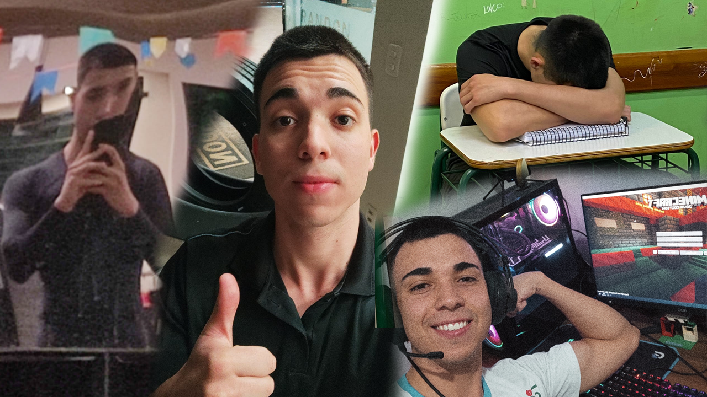

QUEM É DANIEL E O QUE FAZ DA VIDA?
Daniel Santos é um verdadeiro herói do cotidiano, conhecido por sua impressionante habilidade em equilibrar trabalho, estudo e diversão com a destreza de um acrobata em uma corda bamba. Sua jornada começa antes do sol nascer, quando ele acorda às 4h30 da manhã. Com o objetivo de se arrumar e se atrasar com estilo para a academia que abre às 6h, Daniel prova que até mesmo a pontualidade pode ser uma arte.
Após sua visita matinal à academia, onde ele faz o impossível parecer fácil – ou pelo menos tenta, se contorcendo entre halteres e esteiras – Daniel se dirige ao seu trabalho como organizador de pneus de caminhão. Das 8h às 18h, ele transforma uma pilha de borracha em um espetáculo de eficiência, empilhando pneus com a precisão de um maestro regendo uma sinfonia.
Ao fim do dia, Daniel se transforma de mestre dos pneus para estudante noturno. Ele chega ao colégio às 19h e enfrenta uma montanha de provas e trabalhos até as 22h30. Entre uma equação e outra, ele se pergunta se algum dia será tão eficiente em organizar seus estudos quanto é com os pneus.
Nos finais de semana, Daniel troca a rotina frenética por uma dose de diversão relaxante ao lado de uma pessoa querida. Juntos, eles exploram o mundo pixelado de Minecraft, construindo castelos e enfrentando mobs com uma combinação perfeita de estratégia e risadas. É o momento em que ele pode finalmente se deixar levar pela criatividade e pelo caos controlado do mundo virtual.